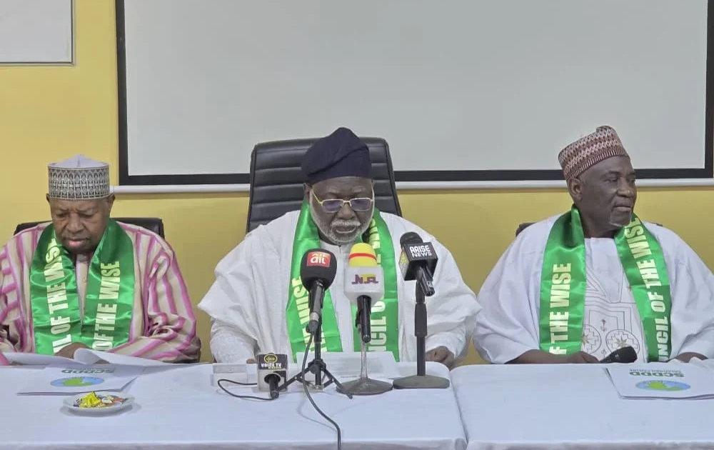

Religion & Faith · 24 Nov 2026
Plateau CAN Chairman Warns Christians Against Political Manipulation Ahead Of 2027 Elections - Arise News

Plateau CAN Chairman Warns Christians Against Political Manipulation Ahead Of 2027 Elections Arise News
Multiple independent publishers are reporting on the same development: Plateau CAN Chairman Warns Christians Against Political Manipulation Ahead Of 2027 Elections - Arise News.
The available reports place the development in the Religion & Faith category. The accounts were compared for agreement on the central event rather than simply shared names or broad topics.
One of the available reports describes the development this way: Plateau CAN Chairman Warns Christians Against Political Manipulation Ahead Of 2027 Elections Arise News
Readers should consult the linked source reports for additional context, updates and details that may change as the story develops.
Sources
This article was produced by the C. O. Eric AI Newsroom from the cited sources. It is published only after automated evidence and safety checks.